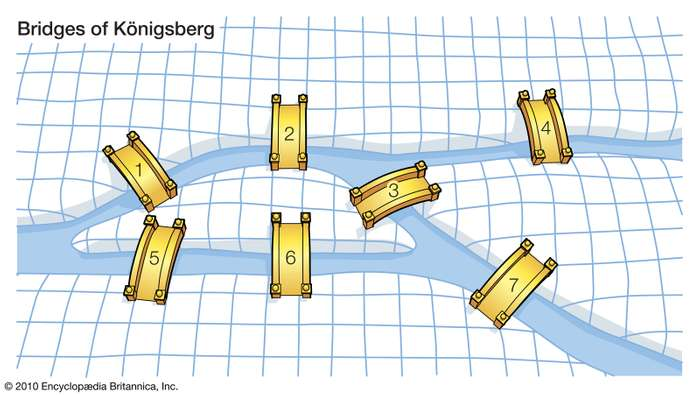

This tutorial will walk you through features of this web app
2/9
What are path finding algorithms?
Simply put, given a start and end location, a path finding algorithm can use a
sequence of
instructions to find a path from the start to the end based on some predefined criteria. Many of the concepts used
in these
algorithms are based from a branch of mathematics called graph theory.

The bridge traversal problem is an age-old graph theory question. Can you find a path that traverses all seven bridges, given that you can travel across each bridge only once?
Find the answer here.
3/9
Types of Path Finding Algorithm
This tutorial will walk you through features of this web app
4/9
Get started by picking a start node
This tutorial will walk you through features of this web app
5/9
Now pick a location for your end node
This tutorial will walk you through features of this web app
6/9
Draw obstacles/walls
This tutorial will walk you through features of this web app
7/9
Pick your desired algorithm
This tutorial will walk you through features of this web app
8/9
Hit Run!
This tutorial will walk you through features of this web app
9/9
Enjoy the animation
This tutorial will walk you through features of this web app